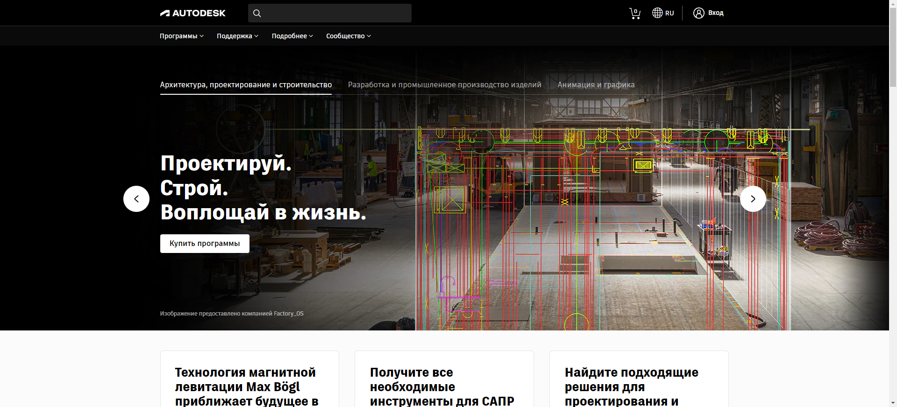

Дізнайтеся всі можливості 3Д разом із професійною програмою для 3д розробки - 3Ds Max
Змоделюйте свою ідею у найдрібніших подробицях
3ds Max надає великий гнучкий інструментарій для створення першокласних проектів з повним контролем художнього задуму.
Створення масштабних світів у комп'ютерних іграх
Візуалізація високоякісних архітектурних проектів
Моделювання інтер'єрів та об'єктів з високим ступенем деталізації
Пожвавлення персонажів та об'єктів за допомогою анімації та візуальних ефектів
